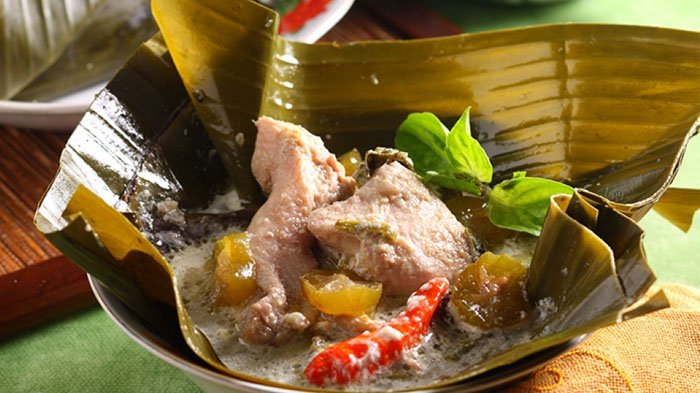

Bahan-bahan
- 8 butir Bawang Merah, iris tipis
- 3 siung Bawang Putih, iris tipis
- 2 buah Cabe Merah, potong-potong
- 2 buah Cabe Hijau, potong-potong
- 2 cm Lengkuas, memarkan
- 2 lembar Daun Salam
- 2 sdm Kecap Manis Bango
- 1/2 sdt Garam
- 1/2 sdt Merica Bubuk
- 1/2 sdt Gula Pasir
Cara Membuat
- Rebus daging sapi dan air hingga daging empuk, angkat dan sisihkan.
- Panaskan minyak goreng, tumis bawang merah dan bawang putih hingga harum, lalu masukkan semua bahan bumbu yang lain.
- Tambahkan daging dan bahan yg lain termasuk kecap manis Bango.
- Masak hingga mendidih lalu angkat. Sajikan hangat.